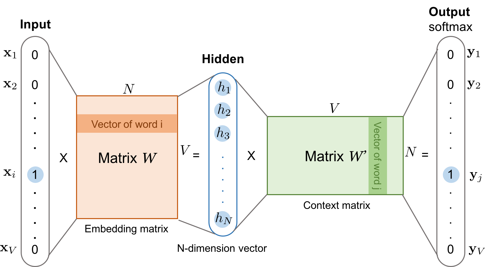

Gensim: Text Mining
Contents
Gensim: Text Mining#
So far, we have been familiar in dealing with cross-sectional data and time series data, which are all structured data. However, most real-world data are unstructured, such as text. So we would want to mine text data to identify meaningful patterns and insights. This goal is achieved in Natural Language Processing (NLP), a sub-field of Artificial Intelligence aiming to help computers understand human language.
NLP is applied in a huge number of problems, some high-level applications appear in daily life are: autocomplete (like in Google Search), machine translation (like Google Translate), grammar error detection and correction (like in Microsoft Word) and virtual assistant (like Apple’s Siri and Amazon’s Alexa). In terms of data mining, common NLP tasks are: keyword extraction, sentiment analysis, named-entity recognition, document classification and email filtering.
In order to teach machines to understand human language, there are usually two tasks need to be done: (1) text vectorization, including cleaning text data and (2) modeling. This topic covers the first task, which the ultimate goal is to represent text numerically. The featuring libraries in this topic are NLTK (Natural Language Toolkit), Spacy and Gensim.
import string
import re
import warnings
import unicodedata
from sspipe import p, px
import numpy as np
import nltk
from sklearn.feature_extraction.text import CountVectorizer, TfidfVectorizer
import gensim
import gensim.downloader as api
from gensim.parsing.preprocessing import remove_stopwords, STOPWORDS
from gensim.models import Word2Vec, FastText, KeyedVectors
import underthesea
import spacy
from spacy import displacy
import tensorflow as tf
import tensorflow.keras as keras
import tensorflow.keras.layers as layers
import tensorflow_hub as hub
import tensorflow_text as text
warnings.filterwarnings("ignore")
np.set_printoptions(precision=4, suppress=True)
1. Lexical analysis#
Lexical analysis is the process of converting a sequence of characters into a sequence of tokens (strings with an assigned and thus identified meaning). A program that performs lexical analysis may be termed a lexer or tokenizer. A lexer is the first step of NLP project that its output is the input of parsing process - helping the parsing more easier.
1.1. Text cleaning#
Typical text cleaning tasks should be done (if needed) before any more advance techniques. Text cleaning, if being done right, can reduce the dimensionality and improve language understanding. In this section I will make up a document and implement the following cleaning steps:
Lowercasing
Spell correction
Removal of emojis and emoticons
Removal of HTML tags
Removal of URLs
Removal of punctuations
doc = '''Once a Spark session is created, its running jobs can be monitored at http://localhost:4040/jobs/.
The default `learning_rate` in XGBoost is 0.3.
By default, a notebook server runs locally at 127.0.0.1 and can be accessed from the browser using 127.0.0.1:8888.
Read the <b>paper</b> of Word2Vec at https://arxiv.org/pdf/1301.3781.pdf and GloVe https://nlp.stanford.edu/pubs/glove.pdf.'''
print(doc)
Once a Spark session is created, its running jobs can be monitored at http://localhost:4040/jobs/.
The default `learning_rate` in XGBoost is 0.3.
By default, a notebook server runs locally at 127.0.0.1 and can be accessed from the browser using 127.0.0.1:8888.
Read the <b>paper</b> of Word2Vec at https://arxiv.org/pdf/1301.3781.pdf and GloVe https://nlp.stanford.edu/pubs/glove.pdf.
patternURL = r'http[\S]+[^.\s]'
patternIP = r'\d+(?:\.\d+){3}(?::\d+)?'
patternHTML = r'<.*?>'
patternPunc = r'[^\w\s]'
patternNum = r'\d'
patternEnChar = r'[^a-z\s+]+'
patternViChar ='[^aàảãáạăằẳẵắặâầẩẫấậbcdđeèẻẽéẹêềểễếệfghiìỉĩíịjklmnoòỏõóọôồổỗốộơờởỡớợpqrstuùủũúụưừửữứựvwxyỳỷỹýỵz\s]'
re.findall(patternURL, doc)
['http://localhost:4040/jobs/',
'https://arxiv.org/pdf/1301.3781.pdf',
'https://nlp.stanford.edu/pubs/glove.pdf']
re.findall(patternIP, doc)
['127.0.0.1', '127.0.0.1:8888']
re.findall(patternHTML, doc)
["`", '`', '<b>', '</b>']
1.2. Tokenization#
Tokenization is the process of separating a piece of text into smaller units called tokens, where tokens can be characters, words or sentences. For example, consider the sentence “Never give up”. The most common way of tokenizing is using white spaces. Assuming space as a delimiter, the tokenization of the sentence results in 3 tokens: “Never”, “give” and “up”.
nltk.download('punkt')
nltk.download('wordnet')
Sentence tokenization#
NLTK’s sentence tokenizer uses Punkt, a pre-trained model for English to devide a text into a list of sentences based on recognizing starting words and sentence boundaries.
text = '''Punkt knows that the periods in Mr. Smith and Johann S. Bach do not mark sentence boundaries.
and sometimes sentences can start with non-capitalized words.
'''
nltk.sent_tokenize(text)
['Punkt knows that the periods in Mr. Smith and Johann S. Bach do not mark sentence boundaries.',
'and sometimes sentences can start with non-capitalized words.']
Word tokenization#
Word tokenization is the most commonly used tokenization approach. It splits a piece of text into individual words based on certain delimiters (whitespaces, puntuations). Depending upon delimiters, different word-level tokens are formed. In NLTK, we can split a text piece into words using many strategies, most noticable:
word_tokenize()implements the Treebank pre-trained model.regexp_tokenize()whichsplits text using a custom regex pattern. There are other convinent functions too, such aswordpunct_tokenize().
text = '''NLTK has been called "a wonderful tool for computational linguistics!"'''
text | p(nltk.word_tokenize) | p(print)
text | p(nltk.wordpunct_tokenize) | p(print)
text | p(nltk.regexp_tokenize, pattern=r'\w+') | p(print)
['NLTK', 'has', 'been', 'called', '``', 'a', 'wonderful', 'tool', 'for', 'computational', 'linguistics', '!', "''"]
['NLTK', 'has', 'been', 'called', '"', 'a', 'wonderful', 'tool', 'for', 'computational', 'linguistics', '!"']
['NLTK', 'has', 'been', 'called', 'a', 'wonderful', 'tool', 'for', 'computational', 'linguistics']
1.3. Word normalization#
English documents use different forms of a word, such as the inflected word “historical” is derived from the root word “history”. Words in each family are usually related and have similar meanings, so in many situations, it is useful to use a word as a replacement for other words in the family. This technique is called word normalization; it has two approaches, stemming and lemmatization.
Stemming#
Stemming is a logical normalization technique that removes common prefixes and suffixes from an inflected word. The result is called a stem; a stem can be meaningless. For example, the word “studying” has its stem “studi” because the stemmer has a step that removes the “-ing” suffix and another step that substitues “-y” with “-i”. NLTK supports two stemming algorithms, Porter stemmer (1980) and Lancaster stemmer (1990).
listWord = ['runner', 'running', 'easy', 'easily', 'studied', 'studying']
stemmer = nltk.PorterStemmer()
for word in listWord:
stem = stemmer.stem(word)
print(f'{word:<9} -> {stem}')
runner -> runner
running -> run
easy -> easi
easily -> easili
studied -> studi
studying -> studi
listWord = ['runner', 'running', 'easy', 'easily', 'studied', 'studying']
stemmer = nltk.LancasterStemmer()
for word in listWord:
stem = stemmer.stem(word)
print(f'{word:<9} -> {stem}')
runner -> run
running -> run
easy -> easy
easily -> easy
studied -> study
studying -> study
Lemmatization#
Lemmatization, unlike stemming, is a physical technique that looks up the corresponding lemma of a word from a prepared database. Due to this behavious, the technique is capable of handling irregular cases such as past tense of some verbs. Lemmatization, however, requires a large database to match the number of cases that stemming can cover, and thus it is more slowly. In NLTK, Wordnet lemmatizer works the best when being provided the appropriate part-of-speech.
listWord = ['feet', 'minima', 'dogs', 'leaves', 'axes', 'mice']
lemmatizer = nltk.WordNetLemmatizer()
for word in listWord:
lemma = lemmatizer.lemmatize(word, 'n')
print(f'{word:<9} -> {lemma}')
feet -> foot
minima -> minimum
dogs -> dog
leaves -> leaf
axes -> ax
mice -> mouse
listWord = ['ran', 'read', 'ate', 'fallen', 'sung', 'bought']
lemmatizer = nltk.WordNetLemmatizer()
for word in listWord:
lemma = lemmatizer.lemmatize(word, 'v')
print(f'{word:<9} -> {lemma}')
ran -> run
read -> read
ate -> eat
fallen -> fall
sung -> sing
bought -> buy
listWord = ['higher', 'strongest', 'better']
lemmatizer = nltk.WordNetLemmatizer()
for word in listWord:
lemma = lemmatizer.lemmatize(word, 'a')
print(f'{word:<9} -> {lemma}')
higher -> high
strongest -> strong
better -> good
1.4. Stop words removal#
Another interesting preprocessing technique for text data is removing stop words. They are common words but have a very little meaning (such as “the”, “a” and “in”), and are usually filtered out by search engines while fetching results from the database. In NLP, specifically for mining tasks such as keyword extraction, sentiment analysis and document classification, it makes sense to remove stop words. But for AI applications like machine translation and question answering, stop words serve an important role and should not be discarded.
nltk.download('stopwords')
stopwordsGensim = list(STOPWORDS)
stopwordsNltk = list(nltk.corpus.stopwords.words('english'))
display(stopwordsGensim[:5])
display(stopwordsNltk[:5])
['we', 'been', 'everywhere', 'does', 'upon']
['i', 'me', 'my', 'myself', 'we']
text = 'my songs know what you did in the dark'
remove_stopwords(text, stopwordsNltk)
'songs know dark'
2. Text representation#
Machine Learning algorithms require numeric input and do not process the string or raw text. The task of converting text data into numerical data is generally called text vectorization. Before moving to the technical details, we define some basic terminologies:
a token or a term is usually a word
a document is a collection of tokens, equivalent to an observation
a corpus is a collection of documents, equivalent to the dataset
2.1. Text vectorization#
In this appoach, the final goal is to transform each word into a scalar. The corpus will then be transformed into a matrix, which resembles tabular data and let us apply tabular learning algorithms.
N-gram#
N-gram is an extended way to define a token, that considers a sequence of \(n\) consecutive words rather than a single word. In English, most of the time we would want to use \(n=1\) (unigram), \(n=2\) (bigram) or \(n=3\) (trigram).
Bag Of Words#
Bag Of Words (BOW) treats each token in the corpus a feature and counts how many times that word occurs in each document. This is a very simple technique with some notable downsides:
The number of returned features equals to the vocabulary size and is thus very large. The matrix of token counts is very sparse and is not memory efficient.
It does not take into account order of words in the documents, which is a very important properties of sequential data.
TF-IDF#
TF-IDF is an improved version of BOW, calculated as the product of two components, \(\text{TF}\) (Term Frequency) and \(\text{IDF}\) (Inverse Document Frequency). Let’s say for a token \(t\), a document \(d\) and the corpus \(D\), we first define two basic concepts, term frequency and document frequency:
Term frequency, denoted \(\text{TF}(t,d)\), implies how frequent the token \(t\) appears in the document \(d\). There are several definitions for \(\text{TF}\), including binary, count and ratio (divided by document size).
Document frequency, denoted \(\text{DF}(t,d,D)\), is the ratio of the document \(d\) that contains token \(t\) in the entire corpus \(D\). A high value of \(\text{DF}\) tells us that the token \(t\) is popular word in the corpus and is likely to be a stop word.
In the calculation, we take the inverse of document frequency (so that it penalizes stop words) then log transform it (to avoid exploding values): \(\text{IDF}=\log(1\div\text{DF})\). The final calculation is \(\text{TF-IDF}=\text{TF}(t,d)\times\text{IDF}(t,d,D) \).
Implementation: Sklearn#
Scikit-learn implements BoW via the class CountVectorizer and TF-IDF via the class TfidfVectorizer. Both classes are very powerful as they already integrate tokenization, stop words removal and other customization for steps like word normalization. The later class is highly recommended in practice because it can be easily transformed to BoW by removing both IDF re-weighting and normalization. It has the following hyperparameters:
prepocessor: the function that processes raw text, suites for tasks like lowercasing and HTML tags removal.tokenizer: the custom tokenizer; the easiest way to think about it is NLTK’s tokenization functions.stop_words: the list of stop words.ngram_range: the tuple containing lower and upper bounds of \(n\) in N-gram. For example, (2,3) means using bigram and trigram.max_dfandmin_df: the thresholds for filtering very frequent and very rare words.max_features: the maximum vocabulary size, default to None. Features are removed based on their rank of term frequency across the corpus.binary: whether to use binary TF, defaults to False.sublinear_tf: whether to apply log transformation to TF, defaults to False.use_idf: whether to divide the result by IDF, defaults to True.smooth_idf: whether to add smoothing term to IDF calculation, defaults to True.norm: whether to normalize the final result, defaults to l2.
corpus = [
"I want to buy a nice bike for my girl. She broke her old bike last year.",
"I had a great time watching that movie last night. We shouuld do the same next week",
"If you buy this now, you will get 3 different products for free in the next 10 days.",
"I am living in a small house in France, and my wish is to learn how to ski and snowboad",
"It is time to invest in some tech stock. The stock market is will become very hot in the next few months",
]
class LemmaTokenizer:
def __init__(self):
self.lemmatizer = nltk.WordNetLemmatizer()
self.tokenizer = nltk.RegexpTokenizer(pattern='\w+')
def __call__(self, doc):
# doc = doc.lower()
doc = self.tokenizer.tokenize(doc)
doc = [
token
| p(self.lemmatizer.lemmatize, 'n')
| p(self.lemmatizer.lemmatize, 'v')
| p(self.lemmatizer.lemmatize, 'a')
for token in doc
]
return doc
params = dict(
tokenizer=LemmaTokenizer(),
token_pattern=None,
stop_words=gensim.parsing.preprocessing.STOPWORDS,
ngram_range=(1,2),
)
vectorizer = TfidfVectorizer(**params)
vectorizer.fit(corpus)
columns = vectorizer.get_feature_names_out()
data = vectorizer.transform(corpus).toarray()
pd.DataFrame(data=data, columns=columns)
| 10 | 10 day | 3 | 3 different | bike | bike girl | bike year | break | break old | buy | ... | time invest | time watch | want | want buy | watch | watch movie | week | wish | wish learn | year | |
|---|---|---|---|---|---|---|---|---|---|---|---|---|---|---|---|---|---|---|---|---|---|
| 0 | 0.000000 | 0.000000 | 0.000000 | 0.000000 | 0.463105 | 0.231553 | 0.231553 | 0.231553 | 0.231553 | 0.186815 | ... | 0.000000 | 0.000000 | 0.231553 | 0.231553 | 0.000000 | 0.000000 | 0.000000 | 0.000000 | 0.000000 | 0.231553 |
| 1 | 0.000000 | 0.000000 | 0.000000 | 0.000000 | 0.000000 | 0.000000 | 0.000000 | 0.000000 | 0.000000 | 0.000000 | ... | 0.000000 | 0.281151 | 0.000000 | 0.000000 | 0.281151 | 0.281151 | 0.281151 | 0.000000 | 0.000000 | 0.000000 |
| 2 | 0.281151 | 0.281151 | 0.281151 | 0.281151 | 0.000000 | 0.000000 | 0.000000 | 0.000000 | 0.000000 | 0.226831 | ... | 0.000000 | 0.000000 | 0.000000 | 0.000000 | 0.000000 | 0.000000 | 0.000000 | 0.000000 | 0.000000 | 0.000000 |
| 3 | 0.000000 | 0.000000 | 0.000000 | 0.000000 | 0.000000 | 0.000000 | 0.000000 | 0.000000 | 0.000000 | 0.000000 | ... | 0.000000 | 0.000000 | 0.000000 | 0.000000 | 0.000000 | 0.000000 | 0.000000 | 0.258199 | 0.258199 | 0.000000 |
| 4 | 0.000000 | 0.000000 | 0.000000 | 0.000000 | 0.000000 | 0.000000 | 0.000000 | 0.000000 | 0.000000 | 0.000000 | ... | 0.245065 | 0.000000 | 0.000000 | 0.000000 | 0.000000 | 0.000000 | 0.000000 | 0.000000 | 0.000000 | 0.000000 |
5 rows × 69 columns
Implementation: Keras#
While Scikit-learn interface is good for Machine Learning, the TensorFlow’s class TextVectorization provides suitable input for Deep Learning. It has the following configurations:
standardize: the strategy to preprocess text, defaults to lower_and_strip_punctuation. Can be a user-defined function usingtf.stringsfunctions.split: the pattern to tokenize text, defaults to whitespace. Can be a user-defined function.max_tokens: the vocabulary maximum size, defaults to None (no limit). If set to a number, low frequency words will be truncated.ngrams: the tuple containing values of \(n\) in N-gram, defaults to None (uni-gram). For example, (1,3) means using unigram and trigram.output_mode: how the output will be returned, defaults to int (integer indices). Other options are multi_hot, count and tf_tdf.output_sequence_length: the length of each document regardless how many tokens it has, defaults to None (not set). If set, documents will be either padded or truncated to satisfy this constraint.ragged: whether the output is a normal tensor or a ragged tensor (where sequences may have different lengths), defaults to False.
This processor is mainly used for text generation tasks such as neural machine translation, which require integer-encoded tokens. Note that there are special tokens in the vocabulary like [UNK] (out-of-vocabulary word) and sometimes we might want to add [START] and [END]. After initialize the processor, we call the adapt() method to fit it to the data.
corpus = [
"I want to buy a nice bike for my girl. She broke her old bike last year.",
"I had a great time watching that movie last night. We shouuld do the same next week",
"If you buy this now, you will get 3 different products for free in the next 10 days.",
"I am living in a small house in France, and my wish is to learn how to ski and snowboad",
"It is time to invest in some tech stock. The stock market is will become very hot in the next few months",
]
def text_clean(doc):
doc = tf.strings.lower(doc)
doc = tf.strings.regex_replace(doc, r'[^a-z\s+]+', '')
doc = tf.strings.join(['[START]', doc, '[END]'], ' ')
return doc
text_clean(corpus[0])
<tf.Tensor: shape=(), dtype=string, numpy=b'[START] i want to buy a nice bike for my girl she broke her old bike last year [END]'>
vectorizer = layers.TextVectorization(standardize=text_clean, max_tokens=100, output_sequence_length=15)
vectorizer.adapt(corpus)
vectorizer(corpus)
<tf.Tensor: shape=(5, 15), dtype=int64, numpy=
array([[ 3, 9, 26, 5, 18, 10, 42, 19, 17, 15, 57, 36, 65, 54, 39],
[ 3, 9, 55, 10, 56, 13, 25, 29, 43, 16, 41, 24, 35, 62, 6],
[ 3, 50, 11, 18, 28, 40, 11, 12, 58, 63, 38, 17, 59, 2, 6],
[ 3, 9, 67, 46, 2, 10, 33, 52, 2, 60, 20, 15, 22, 8, 5],
[ 3, 48, 8, 13, 5, 49, 2, 31, 30, 14, 6, 14, 45, 8, 12]],
dtype=int64)>
vectorizer.get_vocabulary()[:10]
['', '[UNK]', 'in', '[START]', '[END]', 'to', 'the', 'next', 'is', 'i']
2.2. Word embedding#
Text vectorization techniques have proven to be too naive for complicated tasks. This leads to the idea of representing words by vectors, in order to increase the capability of capturing hidden information. There are existing methods to encode words as vectors such as one-hot encoding, but it wastes a lot of memory because of its sparsity. With such an expensive representation, we would want word vectors to be more dense and to have the ability to capture semantics.
To efficiently perform word embedding, there need to be two components: a good learning algorithm and a lot of text to train a pre-trained model. In most popular word embedding methods, who you associated with tell you who your are. In this section, we are going to learn about three word embedding techniques, Word2Vec (by Google in 2013), GloVe (by Stanford in 2014) and FastText (by Facebook in 2015), and how to implement them using Gensim.
Word2Vec#
Word2Vec is a pre-trained probabilistic word embedding model based on simple Neural Networks. It relies on conditional probabilities that predict words using the their surrounding neighbors. For example, in the sentence “The quick brown fox jumps over the lazy dog”, consider the center word “fox” and a context window of size \(2\), then the context words will be “quick”, “brown”, “jumps” and “over”. They will be one-hot encoded so that we have a vector for the center word and another vector for the context words, with \(1\) in the positions of words they are meant to present and \(0\) where else. If the vocabulary has \(V=10\,000\) words, then both the center vector and the context vector also have the size of \(10\,000\).
The Word2Vec model can be obtained via two self-supervised algorithms, Skip-Gram and CBOW (Continuous Bag Of Words). The Skip-Gram algorithm models the probability that context words occur given a center word, for example: \(\text{P}(\text{quick, brown, jumps, over}\mid\text{fox})\). CBOW, in contrast, predicts the center word when seeing some context words: \(\text{P}(\text{fox}\mid\text{quick, brown, jumps, over})\). Each pair of a center vector and a context vector will contribute an observation to our training data.
{kind=link}
Both algorithms use the same Neural Network architecture with only a single hidden layer, but switch the input and output layers. We are going to describe only Skip-Gram, as the same logic also applies to CBOW.
The input layer is constructed by center vectors. Because they are one-hot vectors, multiplying the input layer with any matrix is like looking up the corresponding information from a table.
The hidden layer has no bias term as well as activation function, so that the architecture is simple enough to handle a large amount of data. The corresponding weight matrix \(\mathbf{W}\) will be then used as embedding vectors. If we set up the hidden layer with \(N=300\) nodes, then this will be the size of embedding vectors.
The output layer uses cross entropy loss function and softmax activation function, making what we are doing is predicting probabilities of context words.
Overall, CBOW is a faster architecture than Skip-Gram. Besides, Word2Vec is usually impelemented with some improvements: negative sampling, subsampling of frequent words and context window shrinking.
FastText#
FastText use the same training algorithm as Word2Vec, but it treats each center word as a composed of n-gram characters. For example, for \(n=3\), the word “train” will get you a \(n\)-gram sub-word for each character (“tr”, “tra”, “rai”, “ain”, “in”). In practice, \(n\) is set to be in range \([3,6]\) so that the model can capture all types of prefixes and suffixes. This design gives two advantages over Word2Vec:
Capturing morphology. For words such as “train” and “trained”, FastText can understand they are similar beacause of both internal structures and contexts. Word2Vec only considers contexts and is likely to be less accurate.
Handling out-of-vocabulary words. The embedding for a word in FastText is computed as the sum of all subword vectors.
GloVe#
GloVe (Global Vectors) is an embedding algorithm makes use of the co-occurrance matrix \(\mathbf{X}\in\mathbb{R}^{V\times V}\) (\(V\) is the vocabulary size). The algorithm takes into account global statistics and thus neutralize the effect of frequent words. To understand how GloVe works, let’s denote:
\(x_{ik}\) the number of times the pair of words \(i\), \(k\) occurs
\(x_i=\sum_k x_{ik}\) the number of times any word \(k\) appears in the context of word \(i\)
\(P_{ik}=P(k|i)=x_{ik}\div x_i\) the probability that the word \(k\) appears in the context of word \(i\)
\(\mathbf{w}_i\) the vector representation of word \(i\), which is what we want to learn
The underlying idea of GloVe is about the ratio \(P_{ik}:P_{jk}\), where \(i\), \(j\) are indices of context words and \(k\) is the index of out-of-context words. In the example below, we examine the relationship between two words \(i=\text{ice}\) and \(j=\text{steam}\), by studying the ratio of their co-occurrance probabilities with different probe words, \(k\). We observe that this ratio is extremely large or small when word \(k\) is related to one of \(i,j\); and is very close to \(1\) when the probe word is related to both \(i,j\) or neither.
{kind=link}
Based on this insight, GloVe constructs its loss function as the squared error between the dot product of two embedding vectors \(\mathbf{x}_i^\text{T}\mathbf{x}_j \) and the probability of co-occurrance \(\log P(x_{ij})\).
Pre-trained embeddings#
Gensim integrates all pre-trained embedding vectors from Word2Vec, GloVe and FastText, physically. When you load a specific package, Gensim will download it and load to a KeyedVectors. Note that this object is a physical collection of word vectors, not a logical model. You can use this object to extract embedded vectors and compute word similarities in different ways.
All methods relates to similarity of this object, by default, use cosine similarity, which enables an interesting feature, word calculation. For example, if we remove man from king and then add woman, we should get something very close to queen. This is completely achievable using cosine similarity and will be demonstrated later.
list(api.info()['models'].keys())
['fasttext-wiki-news-subwords-300',
'conceptnet-numberbatch-17-06-300',
'word2vec-ruscorpora-300',
'word2vec-google-news-300',
'glove-wiki-gigaword-50',
'glove-wiki-gigaword-100',
'glove-wiki-gigaword-200',
'glove-wiki-gigaword-300',
'glove-twitter-25',
'glove-twitter-50',
'glove-twitter-100',
'glove-twitter-200',
'__testing_word2vec-matrix-synopsis']
embedder = api.load('fasttext-wiki-news-subwords-300')
[==================================================] 100.0% 958.5/958.4MB downloaded
embedder['cat', 'dog']
array([[-0.9642, -0.6098, 0.6745, 0.3511, 0.4132, -0.2124, 1.3796,
0.1285, 0.3157, 0.6633, 0.3391, -0.1893, -3.325 , -1.1491,
-0.4129, 0.2195, 0.8706, -0.5062, -0.1278, -0.067 , 0.0658,
0.4393, 0.1758, -0.5606, 0.1353],
[-1.242 , -0.3598, 0.5728, 0.3668, 0.6002, -0.189 , 1.2729,
-0.3692, 0.0891, 0.4034, 0.2513, -0.2555, -3.9209, -1.11 ,
-0.2131, -0.2385, 0.9532, -0.5275, -0.0008, -0.3577, 0.5558,
0.7787, 0.4687, -0.778 , 0.7838]], dtype=float32)
embedder.similarity('king', 'queen')
0.9202422
embedder.most_similar('cat', topn=5)
[('dog', 0.9590820074081421),
('monkey', 0.920357882976532),
('bear', 0.9143136739730835),
('pet', 0.9108031392097473),
('girl', 0.8880629539489746)]
embedder.most_similar(positive=['woman', 'king'], negative=['man'], topn=5)
[('meets', 0.8841924071311951),
('prince', 0.832163393497467),
('queen', 0.8257461190223694),
('’s', 0.8174097537994385),
('crow', 0.813499391078949)]
Custom training#
An important thing we should be sure to distinguish, is a pre-trained model and a learning algorithm. All the mathematics above are learning algorithms, they will be useful when we want to train our custom embedding model for unpopular languages such as Vietnamese. We can intialize a new model and train from scratch with our own dataset via two Gensim classes, Word2Vec and FastText. They have the following hyperparameters:
vector_size: the size of each embedding vector, defaults to 100. Usually higher is better.sg: whether to use Skip-Gram, otherwise use CBOW, defaults to True.window: the context window size, defaults to 5. Recommended values are 10 for Skip-Gram and 5 for CBOW.negative: the number of noisy words drawn for negative sampling, defaults to 5. Should be in range \([5,20]\).sample: the sub-sampling rate of frequent words, defaults to 0.001. Recommended values are in range \([10^{-5},10^{-3}]\).shrink_windows: whether to shrink context window, defaults to True.min_nandmax_n: the range of \(n\) in FastText’s N-gram, defaults to 3 and 6.
The appropriate format for these two classes is a list of lists (tokenized sentences). When our custom model has been intialized successfully on a corpus, you can keep teaching it using more and more data by calling the
train() method. You can also call the wv (word vectors) method to access the embedding vectors via a KeyedVectors object. A good practice which is highly recommended by Gensim is only using the embedded vectors (physical) instead of the full model (logical) because the physical option spends less memory and can extract vectors much faster.
list(api.info()['corpora'].keys())
['semeval-2016-2017-task3-subtaskBC',
'semeval-2016-2017-task3-subtaskA-unannotated',
'patent-2017',
'quora-duplicate-questions',
'wiki-english-20171001',
'text8',
'fake-news',
'20-newsgroups',
'__testing_matrix-synopsis',
'__testing_multipart-matrix-synopsis']
corpus1 = list(api.load('text8'))[:100]
corpus2 = [
['human', 'interface', 'computer'],
['survey', 'user', 'computer', 'system', 'response', 'time'],
['eps', 'user', 'interface', 'system'],
['system', 'human', 'system', 'eps'],
['user', 'response', 'time'],
['graph', 'trees'],
['graph', 'minors', 'trees'],
['graph', 'minors', 'survey'],
]
model = FastText(corpus1, vector_size=7, window=5, min_count=1, workers=4, sg=True)
model.train(corpus2, total_examples=1, epochs=1)
(28, 28)
model.wv.save('output/word2vec_sample.vectors')
embedder = KeyedVectors.load('output/word2vec_sample.vectors', mmap='r')
embedder['system']
array([-0.6818, 1.1834, -2.3567, -1.0533, -0.7062, -1.593 , -0.3097],
dtype=float32)
2.3. Contextual embedding#
Word embedding has done a decent job improving the text representation task, but they cannot handle heteronyms. This is because, the context is needed to determine the true meaning of such words. For example, the word “bank” in “river bank” and “bank deposit” has completely different meanings but will gain the same embedding by Word2Vec or GloVe.
This problem can be solved using contextual embedding, a technique that pretrains a logical model rather than a physical vectors collection. The model has the capable of transforming a word into different embedding vectors based on specific context. Many contextual embedding methods have been proposed out there, where the most noticeable ones are ULMFiT, ELMo, BERT and Transformer.
(w) BERT#
BERT (Bidirectional Encoder Representations from Transformers) is a state-of-the-art architecture for pretraining word representation proposed by Google in 2018. It is designed so that the embedding of a word takes into account both left and right context words. BERT models are pre-trained on a large corpus of text, can be then fine-tuned for specific tasks. There are a lot of BERT pre-train models can be found in TensorFlow Hub:
BERT-base, models by original authors
BERT-experts, fine-tuned BERT-base models for different domains
ALBERT, a lite version of BERT with reduced number of parameters
ELECTRA, a BERT-like architecture that pre-trains a discriminator
When using BERT in TensorFlow, the corpus needs to go through a preprocessor first (read the documentation to know which processor should be used). Then, the BERT model takes the processed data as input to generate embedding vectors. This object has two important keys,
sequence_output which represents each token a vector and
pooled_output which represents the whole sequence a vector.
bertProcessor = hub.KerasLayer('https://tfhub.dev/tensorflow/bert_en_uncased_preprocess/3')
bertEncoder = hub.KerasLayer('https://tfhub.dev/tensorflow/small_bert/bert_en_uncased_L-4_H-512_A-8/1')
doc = [
'this is such an amazing movie',
'this movie is terrible',
]
doc = bertProcessor(doc)
embed = bertEncoder(doc)
embed['pooled_output'].shape
TensorShape([2, 512])
embed['sequence_output'].shape
TensorShape([2, 128, 512])
3. Sequence labeling#
Sequential labeling, as its name states, is the task of classifying members of a sequence into pre-defined categories. The main application of sequence labeling in NLP is syntactic analysis.
3.1. Syntactic analysis#
Syntactic analysis is the process of analyzing word roles and relationship. We are going to implement three most common analyses of this type using SpaCy.
Part of speech#
Part-of-speech (POS, somtimes called POS tag) is the grammatical category of words. The problem of finding POS of words is call POS tagging. It is the simplest sequence labeling problem, as each word has only one POS tag. The complete list of POS tags can be found here.
nlp = spacy.load('en_core_web_sm')
doc = nlp("I'm hungry, but there is nothing in the fridge")
listToken = [token.text for token in doc]
listPos = [token.pos_ for token in doc]
listDesc = [spacy.explain(token.pos_) for token in doc]
pd.DataFrame({
'token': listToken,
'postag': listPos,
'description': listDesc,
})
| token | postag | description | |
|---|---|---|---|
| 0 | I | PRON | pronoun |
| 1 | 'm | AUX | auxiliary |
| 2 | hungry | ADJ | adjective |
| 3 | , | PUNCT | punctuation |
| 4 | but | CCONJ | coordinating conjunction |
| 5 | there | PRON | pronoun |
| 6 | is | VERB | verb |
| 7 | nothing | PRON | pronoun |
| 8 | in | ADP | adposition |
| 9 | the | DET | determiner |
| 10 | fridge | NOUN | noun |
Dependency#
Dependency parsing is the process of analyzing the sentence structures and word relationships. It can be used to examine phrasal nouns and verbs. The full list of dependency labels can be found here.
nlp = spacy.load("en_core_web_sm")
doc = nlp("I'm hungry, but there is nothing in the fridge")
displacy.render(doc, style='dep', options={'distance': 100})
Named entities#
Named entity recognition is the problem of determining if a word has real-world meanings, such as name of people, organizations and locations. The list of Spacy’s entity names can be found here.
nlp = spacy.load("en_core_web_sm")
doc = nlp("Apple is looking at buying U.K. startup for $1 billion")
displacy.render(doc, style='ent')
[(ent.text, ent.label) for ent in doc.ents]
[('Apple', 383), ('U.K.', 384), ('$1 billion', 394)]
(w) Conditional Random Field#
Conditional Random Field https://github.com/TeamHG-Memex/sklearn-crfsuite
Conditional Random Fields are a discriminative model, used for predicting sequences. They use contextual information from previous labels, thus increasing the amount of information the model has to make a good prediction. Discriminative classifier - they model the decision boundary between the different classes (just like logistic regression)
4. NLP for Vietnamese#
4.1. Character normalization#
There are two types of Vietnamese characters being widely used, decomposed and composed. They are visually identical, but are constructed from different Unicode code-points. We can see the the difference in the example below for the word “Tiếng Việt”. Because of this, we use the unicodedata.normalize() function to convert between the two forms, with the corresponding names NFD and NFC. As the composed (NFC) form takes less memory, it will be the go-to choice.
strNFC = 'Tiếng Việt'
strNFD = 'Tiếng Việt'
strNFC == strNFD
False
print(strNFD.encode('utf-8'))
print(strNFC.encode('utf-8'))
b'Ti\xc3\xaa\xcc\x81ng Vi\xc3\xaa\xcc\xa3t'
b'Ti\xe1\xba\xbfng Vi\xe1\xbb\x87t'
print(strNFD.encode('unicode_escape'))
print(strNFC.encode('unicode_escape'))
b'Ti\\xea\\u0301ng Vi\\xea\\u0323t'
b'Ti\\u1ebfng Vi\\u1ec7t'
import unicodedata
unicodedata.normalize('NFC', strNFD) == strNFC
True
We can also vectorize the normalization function so that we can transform a corpus.
from numpy import vectorize
@vectorize
def normalize_vn(doc):
return unicodedata.normalize('NFC', doc)
corpus = [
'Tiếng Việt',
'Hà Nội',
'ngôn ngữ'
]
normalize_vn(corpus)
array(['Tiếng Việt', 'Hà Nội', 'ngôn ngữ'], dtype='<U10')
4.2. Underthesea#
This section uses Underthesea for Vietnamese NLP. Other resources, VNCoreNLP and PyVi, are available as well. Compared to English, processing Vietnames requires no stemming and lemmatization, but there will be additional tasks.
underthesea.text_normalize('Ðảm baỏ chất lựơng phòng thí nghịêm hoá học')
'Đảm bảo chất lượng phòng thí nghiệm hóa học'
underthesea.word_tokenize('Hồ Gươm là danh lam thắng cảnh Hà Nội')
['Hồ Gươm', 'là', 'danh lam', 'thắng cảnh', 'Hà Nội']
underthesea.pos_tag('Hồ Gươm là danh lam thắng cảnh Hà Nội')
[('Hồ Gươm', 'Np'),
('là', 'V'),
('danh lam', 'N'),
('thắng cảnh', 'V'),
('Hà Nội', 'Np')]
underthesea.chunk('Hồ Gươm là danh lam thắng cảnh Hà Nội!')
[('Hồ Gươm', 'Np', 'B-NP'),
('là', 'V', 'B-VP'),
('danh lam', 'N', 'B-NP'),
('thắng cảnh', 'V', 'B-VP'),
('Hà Nội', 'Np', 'B-NP'),
('!', 'CH', 'O')]
underthesea.dependency_parse('Hồ Gươm là danh lam thắng cảnh Hà Nội!')
[('Hồ Gươm', 4, 'nsubj'),
('là', 4, 'cop'),
('danh lam', 4, 'nummod'),
('thắng cảnh', 0, 'root'),
('Hà Nội', 4, 'nmod'),
('!', 3, 'punct')]
underthesea.ner('Hồ Gươm là danh lam thắng cảnh Hà Nội!')
[('Hồ Gươm', 'Np', 'B-NP', 'B-PER'),
('là', 'V', 'B-VP', 'O'),
('danh lam', 'N', 'B-NP', 'O'),
('thắng cảnh', 'V', 'B-VP', 'O'),
('Hà Nội', 'Np', 'B-NP', 'B-LOC'),
('!', 'CH', 'O', 'O')]
References#
nlp.stanford.edu - GloVe: Global Vectors for word representation
arxiv.org - BERT: Pre-training of Deep Bidirectional Transformers for language understanding
arxiv.org - Universal Language Model Fine-tuning for text classification
aegis4048.github.io - Demystifying Neural Network in Skip-Gram language modeling
maelfabien.github.io - Word embedding with Skip-Gram Word2Vec
medium.datadriveninvestor.com - Word2Vec (Skip-Gram model) explained
towardsdatascience.com - Intuitive guide to understanding GloVe embedding
https://www.kaggle.com/learn-guide/natural-language-processing
https://www.kaggle.com/datasets/uciml/sms-spam-collection-dataset/code?resource=download
https://jalammar.github.io/a-visual-guide-to-using-bert-for-the-first-time/
https://www.kaggle.com/code/harshjain123/bert-for-everyone-tutorial-implementation
https://www.projectpro.io/article/bert-nlp-model-explained/558
https://towardsdatascience.com/bert-to-the-rescue-17671379687f
Install#
pip install gensim --upgrade
pip install -q -U "tensorflow-text==2.8.*" --user
Note: you may need to restart the kernel to use updated packages.
pip install underthesea
pip install underthesea[deep] --user